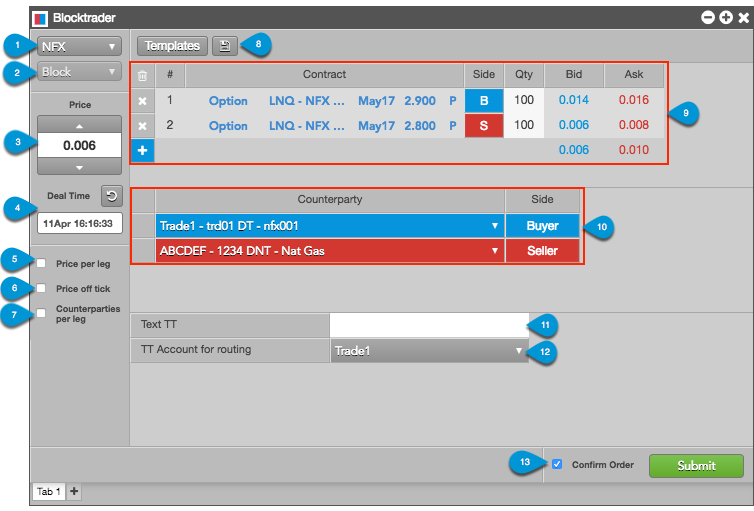

Blocktrader consists of the components needed for submitting wholesale trades.

The images shows the following:
- Exchange selector — Lists the exchanges with OTC trade reporting supported on TT®
- Trade type selector — Lists the OTC trade types supported for the selected exchange.
- Price — Used for entering a price for the transaction. You can also use the up and down arrows to set the price.
- Deal Time — Used for setting the time of the transaction.
- Price per leg — When checked, allows you to enter a price per leg instead of a single price for the entire transaction.
- Price off tick — When checked, allows you to enter an off tick price per leg for instruments that support tick sizes smaller than what is displayed.
- Counterparties per leg — When checked, allows you to select a counterparty per leg in addition to one for each side.
- Templates — Lists saved leg definitions that can be used as templates for defining and submitting additional trades. Click the icon to save the leg definition.
- Leg definition grid — Consists of the following:
- Instrument picker: Allows you to search for or manually select an exchange, product, and instrument in the Contract column.
- Side column: Allows you to select the side of the trade for each leg. A single click in the Side column toggles a leg to the opposite buy/sell direction.
- Qty column: Allows you to enter the buy or sell quantity for the leg.
- Bid and Ask columns: Displays the best bid and ask prices for the contract.
- Net sum values: Displays the net sum of the best bid and ask prices for each leg of the transaction.
- Add/delete column: Allows you to delete all legs or add/delete individual instrument legs. Click "x" to delete a leg, and "+" to add a leg.
- Counterparty selection grid — Consists of the following:
- Counterparty column: Allows you to select an account and counterparty for each side of the trade. The counterparty selection shows your account, the counterparty's alias (e.g., FCM name), and the counterparty's Authorized Trader ID (ATID) or alias.
- Side column: Allows you to set the counterparty's side of the trade. A single click in the Side column toggles a leg to the opposite buy/sell direction.
- Text TT — Allows you to add a text that is not sent to the exchange but remains on the order in the TT system.
- TT Account for routing — Allows you to select an account that has been assigned to you and mapped to an active connection to the exchange.
- Confirm Order and Submit — Displays the trade confirmation window when you click Submit to send the trade to the exchange. Order confirmations are enabled by default.